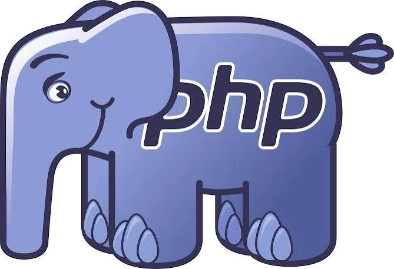
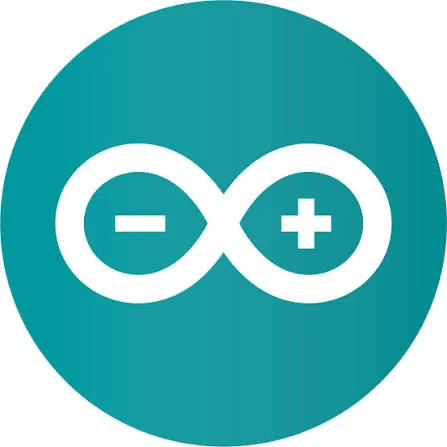
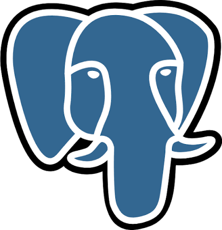
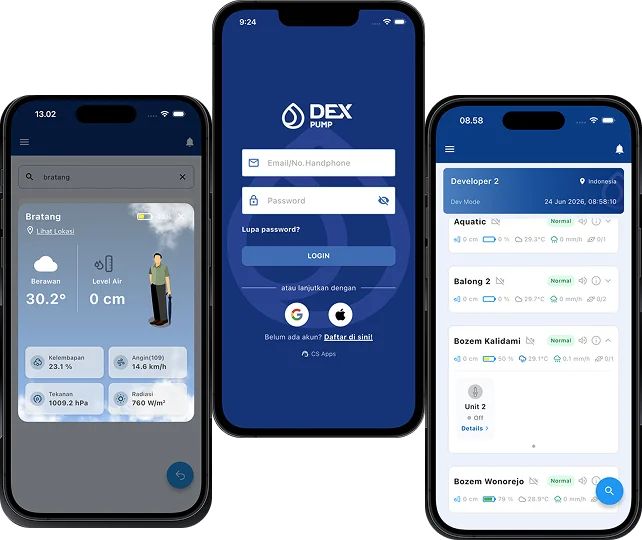
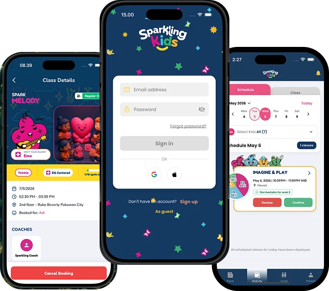
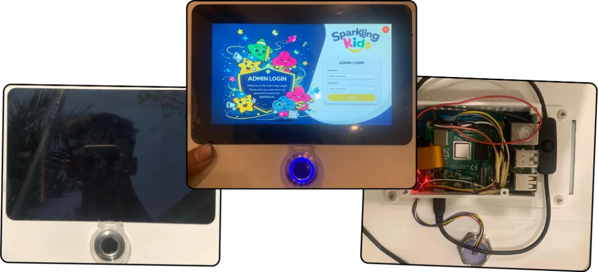
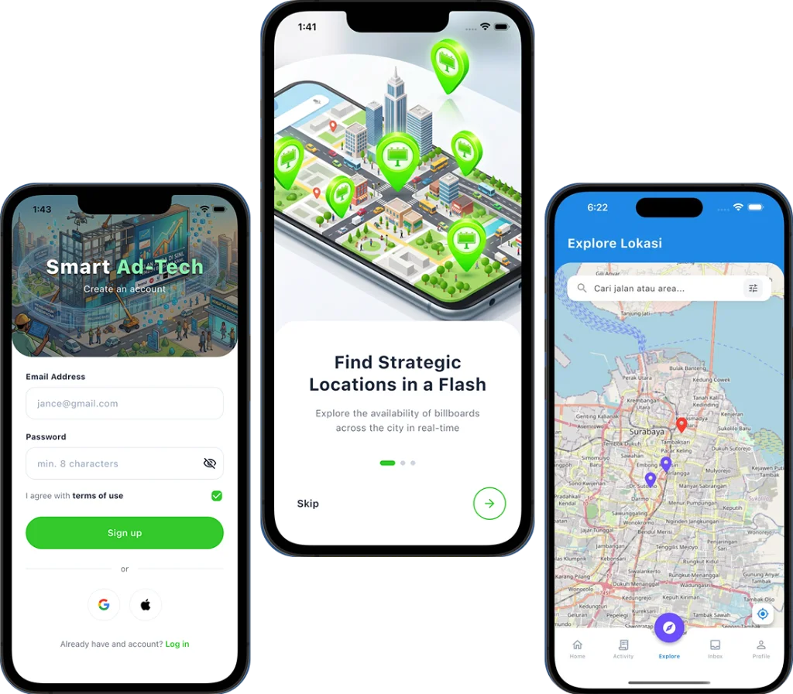
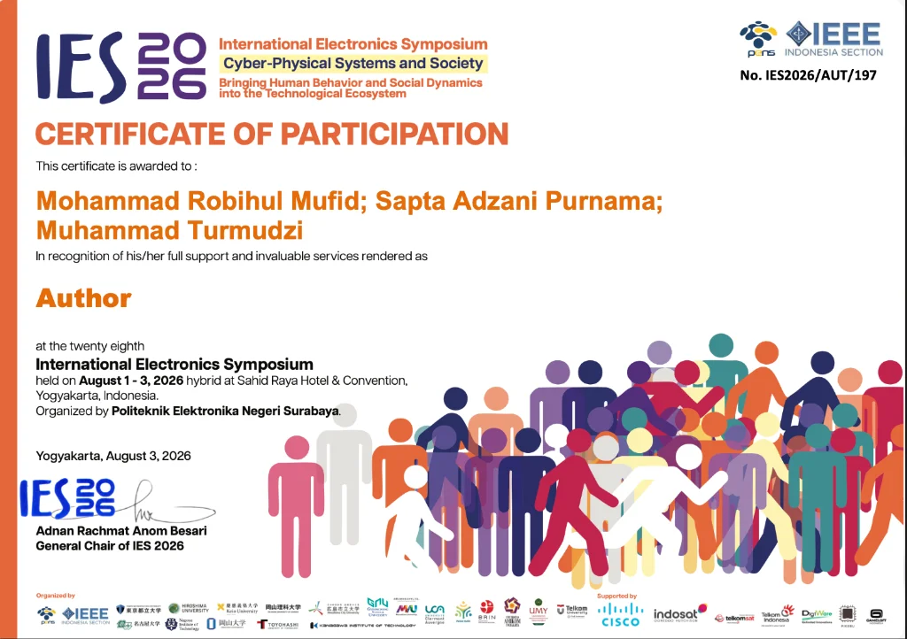
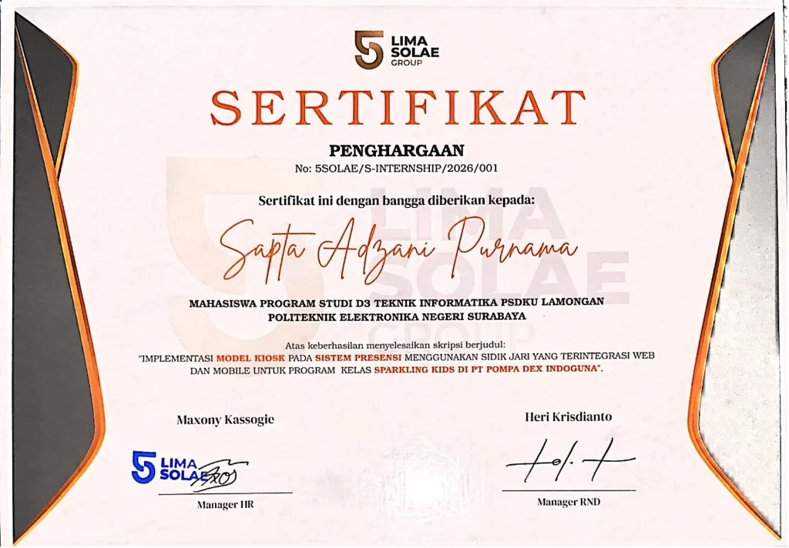
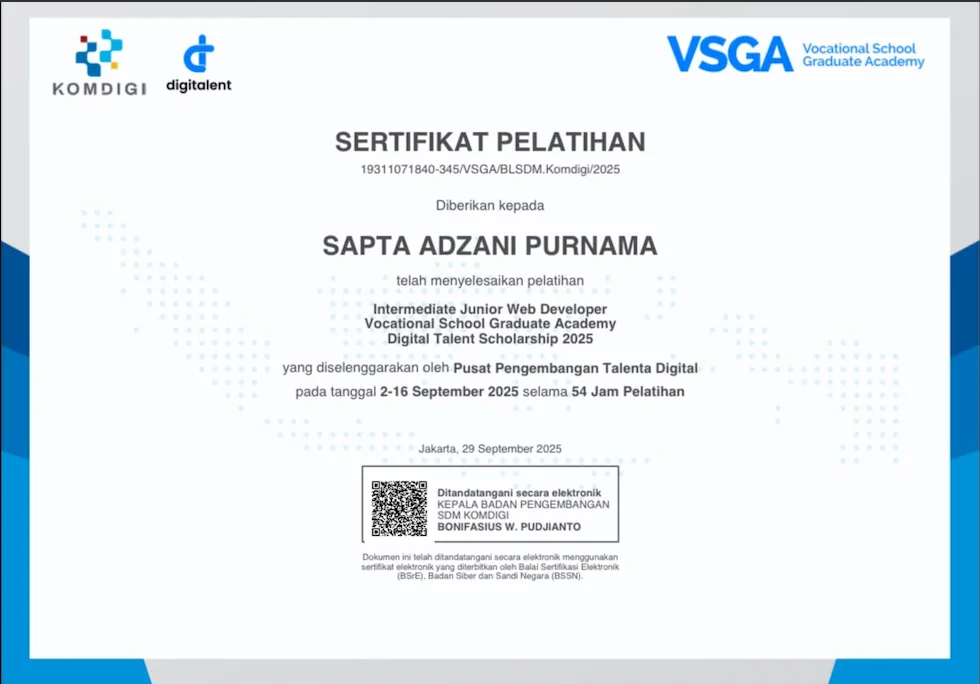

Hi There,
I am Sapta
Specialist in Mobile Applications & System Integration
My primary focus is designing and implementing precise, high-value software Engineer. I have a particular passion for unifying diverse technologies into one controlled system, from Cross-System Integration to connecting applications with real-world hardware (IoT).

PHP
Arduino
PostgreSQLServices & Expertise
My Services & Expertise
Mobile App Development
Intuitive, fast, responsive, and user-friendly mobile applications for iOS and Android platforms.
Website Development
High-performance responsive websites with Core Web Vitals scores >90 and captivating modern designs.
Logic & System Implementation
Structured, accurate, and secure system architectures tailored to business process needs.

Flood Viser: Remote Pump Control & Monitoring System
An internal web and mobile platform built to remotely control and monitor the performance of company-owned water pumps installed across Indonesia.

Sparkling Kids: Kids Activity Management Platform
An application for managing kids' class schedules and activities, featuring Live Attendance and an AI Report Control Center.

IoT-Based Fingerprint Kiosk
A physical biometric kiosk integrated seamlessly with full-stack web and mobile applications.

GIS-Based Billboard Booking App
A mobile application for booking billboard advertising spaces integrated with a Geographic Information System (GIS).
Our Certificates
Here are some professional certifications we have earned to support software development.
IES 2026
Author
Certificate of Participation.

Lima Solae
Group
Final Project Distinction Award.

Kominfo
VSGA 2025
Junior Web Developer Certificate.

KEEP CREATING UNTIL YOU FIND YOUR OWN AUDIENCE.
I am Sapta Adzani Purnama.
SOFTWARE ENGINEER | MOBILE, WEB & IOT INTEGRATION
Hello! I am a passionate developer who loves bridging the gap between physical hardware and digital ecosystems. My journey started with programming small microcontrollers and designing intuitive UI/UX, which eventually led me to engineering cross-platform mobile applications and high-performance modern web architectures. For me, writing code is about simplifying complex problems and building scalable, user-centric systems that make everyday life easier whether that means automating an IoT network, integrating AI analytics, or delivering a seamless mobile app experience.
Education & Academic Credentials
Electronic Engineering Polytechnic Institute of Surabaya (EEPIS)
Associate Degree (A.Md.Kom.) in Informatics Engineering
Developed "Sparkling Kids," an end-to-end IoT biometric attendance and AI analytics ecosystem. Awarded the Final Project Distinction Award by PT Lima Solae Group.
Authored and published technical research at the International Electronics Symposium (IES) 2026 (PENS & IEEE Indonesia Section).
Completed the Basic Student Management Leadership Training (LKMM-TD) in 2024, validating core soft skills in team organization and project management.
Achieved an overall score of 473 on the PENS English Proficiency Test (PEPT) in 2026.
Graduation Moments (Wisuda PENS)
Electronic Engineering Polytechnic Institute of Surabaya (EEPIS) • Informatics Engineering
Toga & Degree Presentation Procession
Open Senate Session • PENS
D3 Informatics Engineering Graduation
Associate Degree (A.Md.Kom.) • PENS
Technical Skills & Stack
Frontend & Mobile
Backend & Database
IoT & Hardware
Network & Systems
AI Agents & Tools
When I am not debugging code or wiring hardware, you will most likely find me playing the guitar. Whether I am learning a new complex chord progression or improvising a solo, I approach music with the exact same mindset I bring to my engineering projects:
“Mastering the rhythm and harmony of a guitar is much like designing system architecture—both require a precise blend of logic, practice, and creativity to ensure all individual components play perfectly in sync.”
Core Work Philosophy
Absolute Reliability
Just like an out-of-tune string ruins a song, an unstable server disrupts the user experience. Whether it is microcontroller firmware running in the field or database queries in the cloud, ensuring systems run securely and stably is my ultimate priority.
Continuous Learning
Technology evolves rapidly. I remain highly adaptable and enthusiastic about exploring new frameworks, programming languages, and hardware innovations to keep my solutions cutting-edge.
Open Collaboration
Complex systems cannot be built in a vacuum, much like playing in a band requires listening to others. Clear, transparent communication is the foundation of any successful project implementation and team dynamic.
Soft Skills & Core Traits
Contact Me
Have an exciting project or want to collaborate? Reach out anytime and let's discuss!
Detail Kontak & Info
You can also reach me through the direct channels below or follow my activities on social media.
Message Sent!
Thank you for reaching out. I will respond to your message as soon as possible.